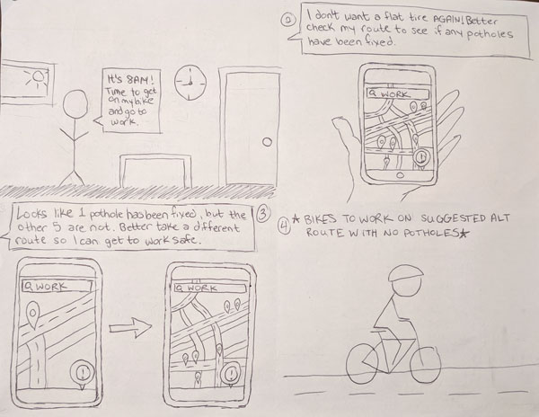

HackerYou UI/UX Project
Smoothride Biking App
Overview
In April 2019, I attended HackerYou's part time UI/UX program to gain more experience in app design and improve my UI design skills. For our final project, the class was given a massive problem to solve for - transportation in the city of Toronto.
The Problem
We all love to hate on TTC, pedestrians, cyclists and the drivers of Toronto (seems to be whichever group we happen to not be participating in that particular day!). Henceforth all the issues this discussion arises. For my project, I chose to focus on one of the main roadblocks (pun intended!) that every method of transportation faces: the roads and their dangerous potholes
The Process
To get started, I narrowed down some user interview questions that encouraged discussion and insigts into how potholes affect comnmuting in the city. I hit the streets and talked to everyone I saw with a bike or scooter (as stopping cars in rush hour traffic probably isn't a good idea), then I reached out to friends and co-workers. Here are some notes on my interview Q&A:
Google Doc with User Interview Questions & Answers
Main takeaways I got from my users:
-
- EVERYONE enounters a pothole on their daily commute
- Almost everyone didn't know that they were able to report it to the city, and if they did, there was no easy way to do it.
- Surprisingly, a sense of community! People were angry about the state of the roads in Toronto, and I found once I started talking to people and empathising on their pothole problems, they opened up more. At the end of the day, everyone felt there needed to be a better solution to make the roads easier to ride, as it's a problem that effects all Torontonians
Once I arrived at the start of my storyboard process, I hit a snag - within the time constraints of the course I couldn't effectively design a solution for every transportation group, so I had to pick one. After some competitive analysis, I discovered that there currently wasn't a pothole hazard app for cycling routes. Always loving a challenge, I changed direction and focused on solving pothole problems for cyclists.
Here are my storyboard sketches:



The Solution
After many additional sketches where I focused on user mapping and limiting down the screens and interactions, I created this prototype to display only the key features of the app: